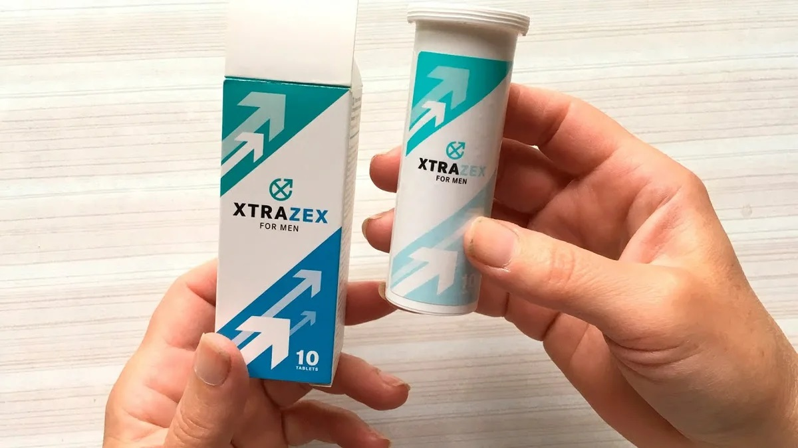
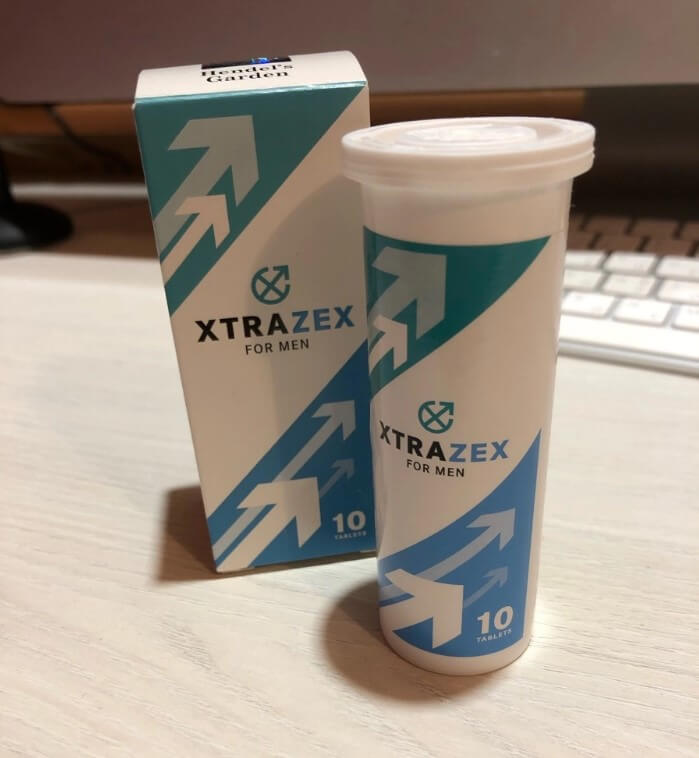
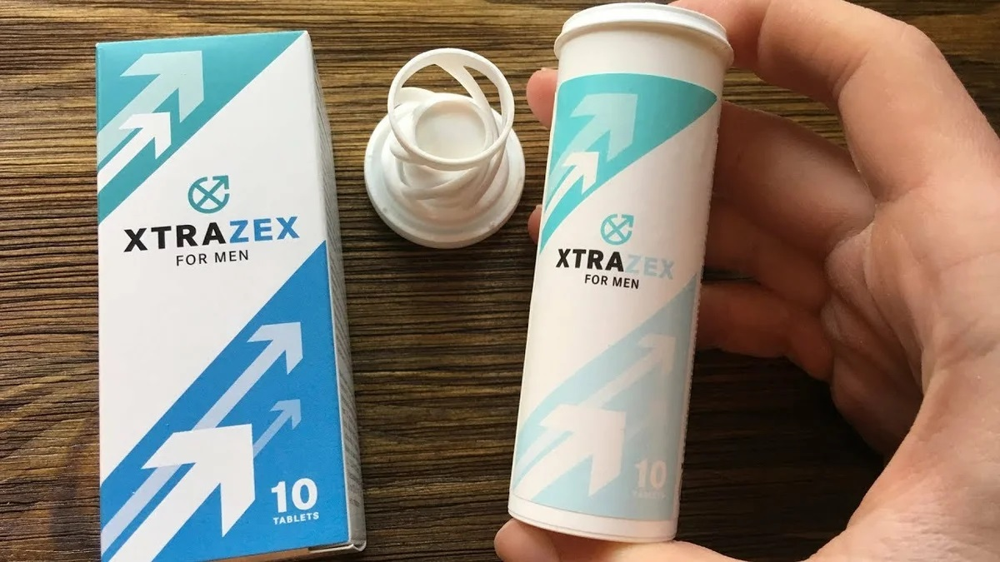

De ce pensionarii români nu vor putea niciodată să-și recâștige potența? În Italia, scăderea potenței legată de vârstă este ușor de tratat!
Fiecare bărbat, mai devreme sau mai târziu, se confruntă cu o diminuarea a funcției sexuale legată de vârstă. La început, potența devine mai slabă și mai rară și apoi dispare complet. Medicii români în acest caz strâng din umeri și spun că timpul nu poate fi învins și IMPOTENȚA LEGATĂ DE V RSTĂ ESTE INCURABILĂ. ESTE OARE ADEVĂRATĂ ACEASTĂ AFIRMAȚIE?
„Timp de șase luni de trai în Italia, am scăpat complet de problemele cu potența. Scuzați că vorbesc așa, dar acum la mine stă ca la unul tânăr! Și asta luând în considerare faptul că am suferit de această problemă într-un fel sau altul de mai mult de 15 ani, trăind în România”.
A scris pe pagina sa de Facebook, pensionarul Donato Rossi în vârstă de 71 de ani, care a emigrat la începutul anului trecut în Italia. Va prezentăm mai jos textul integral.
„În România, medicina stă foarte prost la orice capitol. Mi-am dat seama de acest lucru pe propria mea experiență. Medicină există, dar la nivelul anilor '80 ai secolului trecut. Când trăiești în România, acest lucru nu se observă, dar este suficient să pleci în afară și totul devine evident.
De exemplu, o astfel de problemă frecvent întâlnită la bărbați ca impotență legată de vârstă. Problemele la acest capitol au apărut acum 15 ani, iar acum 10 ani au devenit deja evidente. În general, scăderea funcției sexuale a început chiar mai devreme, după 40 de ani. Cred că mulți bărbați observă asta. La început, sexul devine tot mai rar, iar dorința este mai slabă. Apoi apar eșecuri. Începi imediat să cauți motive: oboseală, stres, vreme, alcool. Apoi, eșecurile apar fără motiv. Și apoi nu se scoală deloc.
Dar organismul are nevoie de sex, în timpul acestuia are loc o curățare a multor sisteme: sangvin, sexual și chiar nervos. Ca urmare, de rând cu impotență pot apărea prostatita și adenomul, iar apoi se poate dezvolta cancerul de prostată. Impotenții nu trăiesc mult timp.
Ca toți bărbații din România, nu m-am grăbit să vizitez un doctor, pentru că știam că, dacă merg la el, trebuie să cheltui o grămadă de bani. Din acest motiv, luam Viagra în cazuri rare, iar în altele pur și simplu nu făceam sex.
Dar într-o zi, totuși, m-am decis să merg la medic. E adevărat, a fost așa cum am presupus de la început, în zadar. Medicul doar m-a diagnosticat cu o boală care se numește științific disfuncție erectilă. M-a sfătuit o alimentație specială și exerciții fizice. Iar în linii generale a spus CĂ NU MAI ESTE NIMIC DE FĂCUT, IMPOTENȚA APARE MAI DEVREME SAU MAI T RZIU LA TOȚI. Atâta timp cât Viagra ajută, puteți să o luați, dar cu prudență, deoarece distruge rapid ficatul și inima, ceea ce la bătrânețe este, de asemenea, extrem de important și periculos. Totodată, de la ea mă durea foarte mult capul.
Când i-am spus toate acestea urologului italian, el s-a uitat la mine cu ochii plini de mirare și mi-a spus că toate acestea țin de secolul trecut! Și că în Italia, medicina este de un alt nivel.
Oamenii de știință italiani au înțeles de mult timp de ce funcțiile sexuale la bărbați scad cu vârsta și au învățat să corecteze acest lucru. Cauza principală (până la 90% din cazurile de impotență legată de vârstă, așa cum a spus medicul) este că, odată cu vârsta, activitatea corectă a glandelor endocrine, în special a hipofizei, este dereglată. La rândul său, acest lucru duce la o scădere a producției de hormoni sexuali (testosteron), care și este cauza impotenței (testosteronul este principalul hormon care răspunde de excitare).
Ce trebuie de făcut în acest caz pentru a restabili potența naturală? Corect! Trebuie normalizată producția de hormoni!
În Italia există un preparat special cu această destinație, se numește Xtrazex. Medicii îl recomandă tuturor bărbaților de peste 40 de ani pentru a preveni scăderea potenței legată de vârstă. Și din moment ce oamenii din Italia sunt mai ascultători și mai responsabili, există foarte puține cazuri de disfuncție erectilă legată de vârstă până la 75–80 de ani.
Același preparat poate restabili potența deja pierdută, iar cei tineri îl folosesc adesea pentru a-și spori performanțele sexuale.
M-a uimit foarte mult faptul că în farmacie practic nu există Viagra și alte medicamente care influențează excitarea și cu care sunt pline rafturile farmaciilor din România. Acolo, toate aceste medicamente sunt vândute strict pe bază de prescripție medicală. Dar, după cum mi-a spus medicul, acestea nu prea sunt prescrise, numai în cazuri extreme rare. În România, un astfel de preparat este principala metodă de tratare a impotenței, cu adevărat populară!
Medicul italian mi-a spus să iau Xtrazex timp de o lună (așa cum am spus deja, nu mai aveam erecție la acel moment). În acest timp, potența mi-a revenit complet, erecția a apărut nu numai la vederea unui corp feminin gol, dar chiar și dimineața, fără motiv, așa cum nu a fost de mult timp în urmă. Și, în general, am simțit o creștere semnificativă a tonusului sexual și a libidoului. Am devenit interesat de sex, ca și înainte!
Acum facem sex cu soția de 1–2 ori pe săptămână. Și asta luând în considerare că am 71 de ani! Un miracol? Pentru Italia – nu, este ceva obișnuit. De aceea aici trăiesc mai mult!
Iată o astfel de diferență groaznică între medicina din România și cea din Italia. Iubesc mult România, dar așa o atitudinea disprețuitoare față de cetățenii propriei țări este pur și simplu uimitoare”.
Se va schimba oare în România ceva spre bine în viitorul apropiat? De ce nu putem accepta metoda italiană de tratament a impotenței legate de vârstă?
Aceste întrebări le-am adresat unui urolog român, doctor în științe medicale, profesor, șef al Catedrei de urologie a Universității de Medicină și Farmacie din Milano Marco Manchini.

De fapt, acest lucru nu este absolut adevărat. Xtrazex este într-adevăr un medicament excelent pentru tratamentul impotenței legate de vârstă. Nimeni nu va nega aceasta. Este recunoscut de întreaga comunitate mondială. Cu toate acestea, în Europa produsul a apărut abia acum două luni, de aceea, în cazul în care medicina română rămâne în urmă de cea europeană, cu siguranță nu cu 30 de ani, așa cum afirmă domnul Rossi. În același timp, desigur există restanțe. Xtrazex este un preparat european, deci este firesc ca pacienții europeni și americani să fie primii care l-au primit. Iar apoi noi.
Acum, acest preparat este implementat în mod activ în practica medicală și în rețelele farmaceutice de la noi din țară. Dar totul este foarte dificil din cauza barierelor birocratice. Avem o medicină care se mișcă foarte greu din loc și este absolut inflexibilă, dar noi depunem toate eforturile necesare, iar eu supraveghez personal această întrebare. Scăderea potenței după 40–50 de ani este o patologie periculoasă, deoarece este cauza principală a dezvoltării adenomului și a cancerului de prostată și, prin urmare, este necesar să fie utilizate toate posibilitățile pentru a scăpa oamenii de ea.
Puteți în calitatea de specialist să ne spuneți mai multe despre acest produs? Care este mecanismul de restabilire a potenței?
Da, desigur. Xtrazex a fost dezvoltat de oamenii de știință elvețieni în anul 2020. Ei au reușit să obțină un extract special din rădăcina de Eurycoma. Acest extract este bun deoarece este capabil să normalizeze activitatea glandelor endocrine și a hipofizei. Ca urmare, crește producția de testosteron, ceea ce, la rândul său, duce la creșterea excitației, libidoului și creșterea potenței. Anume testosteronul este responsabil pentru cât de mult va fi umplut penisul cu sânge.
Astfel, Xtrazex face ca organele sistemului genito-urinar să funcționeze din nou în mod normal, ceea ce duce nu numai la revenirea și amplificarea erecției, ci și la apariția dorinței sexuale în general.
Vreau să menționez că este vorba despre impotența legată de vârstă, cu care se confruntă mai mult de 94% dintre bărbații.
Pe lângă extractul de rădăcină de Eurycoma, preparatul include și alte macro- și oligoelemente utile, substanțe active, precum și vitamine. Toate acestea sunt conținute în forma cea mai ușor digerabilă – sub formă de capsule care conțin plante pentru bărbați. În total în jur de 30. O să enumăr principalele.
|
L-Carnitină |
Este necesar pentru a facilita urinarea. Elimină compresia prostatei. Îmbunătățește funcționarea sistemului cardiovascular. |
|
Coajă de Yohimbe |
Are un efect excitant și stimulativ pronunțat, crește puterea sexuală masculină. |
|
Extract de ginseng |
Provoacă o creștere a fluxului de sânge către organele pelviene, crește dorința sexuală, stimulează activitatea centrelor nervoase care sunt responsabile pentru erecția masculină, crește producția de testosteron. |
|
Maca peruviană |
Este o sursă bogată de zinc, mangan și seleniu – substanțe care ajută la îmbunătățirea producției de spermă și la creșterea activității sexuale a bărbaților. |
|
Sulfat de zinc |
Conține seleniu, care îmbunătățește compoziția spermei și mărește volumul acesteia. Elimină eficient problemele cu infertilitatea masculină și potența redusă. |
|
L-Leucină |
Îmbunătățește fluxul de sânge către penis, asigurând o erecție puternică. |
|
Extract de coajă de Muira Puama |
Sporesc dorința sexuală la bărbați, îmbunătățesc fluxul sanguin în zona organelor genitale. |
|
Nicotinamidă (Vitamină B3) |
Elimină toxinele și lipidele „dăunătoare” din organism. |
Altfel spus, Xtrazex are un efect complex și multilateral asupra disfuncției erectile.
Preparatul este într-adevăr revoluționar și avem mari speranțe cu el. Exact 2 luni în urmă am terminat să-l testăm în institutul nostru. În studiul de testare, au participat 100 de voluntari cu vârsta peste 50 de ani, care aveau probleme cu potența. Toți au luat Xtrazex timp de 4–6 săptămâni.
Rezultatele testului:
- restabilire completă a potenței (a apărut posibilitatea de a face sex cel puțin o dată pe săptămână) – 97,2% dintre subiecți;
- creșterea libidoului și a dorinței sexuale – 98,4% dintre subiecți;
- însănătoșirea prostatei, dispariția fenomenelor de stază din prostată – 94,3% dintre subiecți;
- îmbunătățirea stării generale, creșterea energiei – 93,9% dintre subiecți;
- lipsa efectelor secundare și a dependenței – 100% dintre subiecți.
Și un al beneficiu al Xtrazex, acesta are un efect prelungit. Altfel spus, nu doar fortifică erecția cât timp acționează (așa cum face Viagra), dar restabilește potența naturală!
Într-adevăr impresionează. Putem aștepta Xtrazex în farmaciile italian? Când se va întâmplă acest lucru?
Sincer, nu pot spune acum când acest preparat va apărea în farmacii. După cum am menționat deja, birocrația din Italia nu permite să facem acest lucru rapid. Faptul este că standardele italian diferă puțin de cele europene și, prin urmare, pentru a vinde medicamentul prin intermediul farmaciilor, acesta trebuie să treacă prin standardizarea italienească. Dar producătorul refuză să facă acest lucru. Acum negociem acest aspect.
Cu toate acestea, toți doritorii pot deja primi Xtrazex la un preț redus, prin Internet, direct de pe site-ul nostru.
Am reușit să obținem sprijinul statutului și am procurat o cantitate mare de produs chiar din Elveția. Acest lot am decis să-l oferim tuturor celor care au nevoie (nu mai mult de 2 pachete pentru o persoană) cu livrare în orice loc al Italianiei la un preț promoțional special.
Mai multe detalii despre ce trebuie să faceți pentru a primi Xtrazex:
- Completați formularul oficial al comenzii Xtrazex la sfârșitul acestui articol.
- Peste puțin timp, veți fi contactat de un consultant, care va răspunde la toate întrebările dvs. Trebuie să-i spuneți adresa de livrare.
- După 5–7 zile, timp necesar pentru procesare, curierul vă va livra comanda.
Vindem Xtrazex deja mai mult de o lună. Această oportunitate a fost deja utilizată de aproximativ 3.000 de bărbați. La adresa de e-mail a institutului nostru am primit deja aproximativ câteva sute de scrisori de mulțumire. Deci într-adevăr preparatul ajută multor persoane.
Cât va dura programul de reduceri?
Până la epuizarea lotului Xtrazex. Dar stocul medicamentului se epuizează aproximativ în 3-4 săptămâni. Și asta în ciuda faptului că nu există publicitate la TV și radio. Pacienții care s-au vindecat recomandă acest produs prietenilor și rudelor lor. Chiar și pentru noi a fost o surpriză să aflăm că Xtrazex se va epuiza atât de rapid. Ultima zi de reduceri pentru Xtrazex – 07.10.2020 inclusiv.
Iată de ce recomand să plasați comanda pentru Xtrazex cât mai repede. Programul nu se va repeta în acest an.
La 07.10.2020 soldul lotului cu preț redus constituie:
23 buc.
23 buc.
Poți să completezi formularul și să primești Xtrazex la un preț redus de 49 €:
Comentarii:
Acestea sunt niște capsule serioase! Le-am luat. La 53 de ani, din cauza divorțului, au apărut probleme cu potența. M-au ajutat. Starea s-a îmbunătățit - aproape ca la 20 de ani :)

Trebuie să comand pentru soț, nu-mi mai amintesc când am avut sex normal. El are 61 de ani, eu am 49 de ani. Nu vreau să-mi termin viața sexuală atât de devreme. Sper să ajute. Gândiți-vă, dragi bărbați, trebuie să vă tratați, este normal...
Ioana, cred că va ajuta. Produsul este cel mai bune dintre toate cele existente, vă spun ca o persoană care l-a încercat personal. Medicul mi-a spus acum patru ani, că sunt terminat. Dar încă nu sunt terminat. Xtrazex m-a ajutat. Am 68 de ani! Demult este timpul să înceapă să-l comercializeze în farmaciile din Italia.

Susțin! Capsulele sunt bune! Le beau și eu. Am comandat direct din Elveția. M-a costat 350 de euro! Aici prețul este ca un cadou. Grăbiți-vă, domnilor!

Soțul meu le-a băut. L-a ajutat. Este important că are 72 de ani!
Sunt pur și simplu uimit, potența este acum într-adevăr de FIER! Recent am organizat un maraton de sex, m-am distrat cu o fată aproape 3 ore. Ei bine, cu pauze mici :) Am terminat de trei ori! Și iată ce am observat, după ce termin mă recuperez foarte repede, literalmente 5-10 minute și din nou se scoală! Dacă, desigur, am o fată frumoasă în apropiere. Mi-am amintit și chiar m-am excita, voi pleca mai devreme de la serviciu...
Am 51 de ani, potența nu am avut de 5 ani. M-am dus la urolog (pentru o altă problemă), acela, printre altele, m-a sfătuit să iau o cură de Xtrazex pentru a îmbunătăți starea generală. După cură, am simțit atracție sexuală. Acum nu prea des, dar potența apare. Uneori facem sex. Mă simt mai bine. Încercați cât timp sunteți tratați.

Am un prieten la țară. Are 70 de ani. Vara auzeam sunete de sex din cabana lui. Ne-am luat de vorbă despre acest subiect, el a spus că fiica i-a adus din Italia un preparat miracol care acolo este folosit de toți. Probabil vorbea despre aceste capsule :)
Din fericire, avem și noi experiență de tratament cu aceste capsule și, de asemenea, pozitivă. Am 64 de ani. În ultimul timp nu prea am avut potență. Apărea foarte rar. Am încercat o mulțime de lucruri pentru a o întoarce. Rețete naturiste, pastile, vizite repetate la urolog. Singurul lucru care a m-ajutat a fost Xtrazex. Acum am sex o dată pe săptămână, stabil. Pentru vârsta mea, aceasta este foarte bine, mulți chiar și atât nu pot.
Atâta timp cât există un program promoțional trebuie luat. Prima dată când am comandat ceva pe Internet, dar s-a dovedit a fi foarte ușor!

Ieri l-am luat de la poștă. Într-adevăr, totul s-a dovedit a fi așa cum este descris.
E ceva nemaipomenit! Mi-am luat „adio” de la disfuncție cu aceste capsule în 3 săptămâni. Recomand tuturor. Singurul remediu care m-a ajutat cu adevărat! Cu atât mai mult că este oferit fără bani pentru testare!
Am comandat. Am reușit în cadrul promoției! Azi e ultima zi! La telefon mi-au spus că au rămas foarte puține ambalaje!
Acum o lună, am luat Xtrazex. În cea mai mare parte pentru prevenire (nu cred că la 38 de ani poate exista impotență). Efectul este cu siguranță cosmic. După câteva luni, voi repeta cura pentru sporirea rezultatului. Dar până acum nu am auzit despre promoție.
